Compassion day
Social Psychology
Colombia
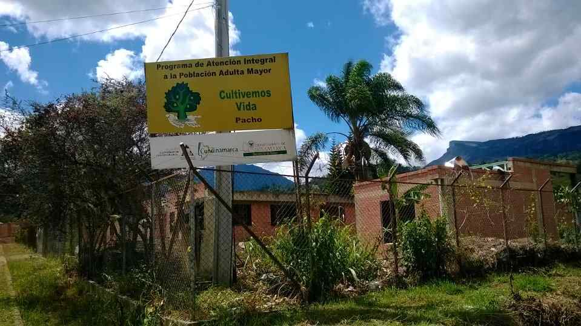
A visit to the elderly
Welfare Center For Elderly People
“ARCHBISHOP GÓMEZ MISAEL”
Welfare Center For Elderly People “ARCHBISHOP GÓMEZ MISAEL”
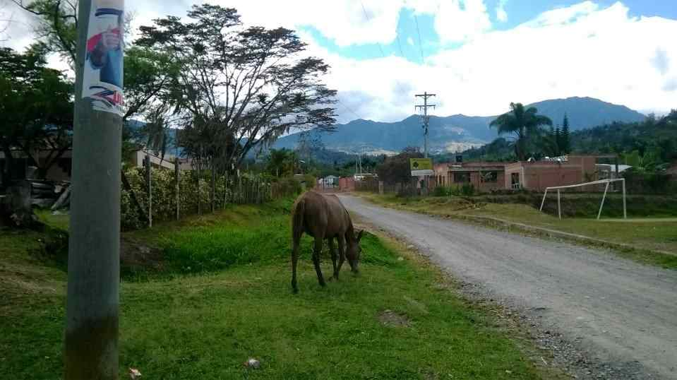
In this text, I would like to tell my experience
during the “day of compassion” suggested by the
Coursera course: Social Psychology.
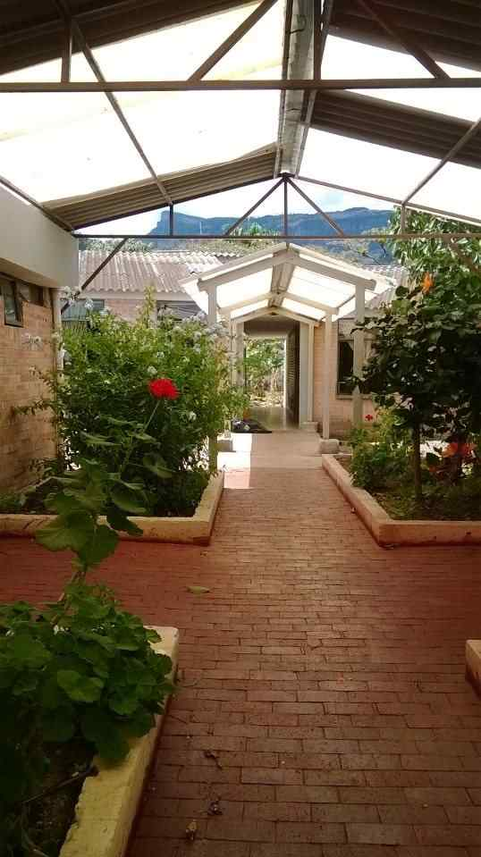
I live my life going back
and forth between Bogota,
the Capital, and Pacho, a
small town in Cundinamarca,
Colombia, where I spend
several days a week, usually
Thursday through Sunday.
When I thought about the
best way to live the day of
compassion, I remembered
the elders of the Welfare
Center, a place that I already
knew. So I paid a visit to the
old people who live in this
Center.
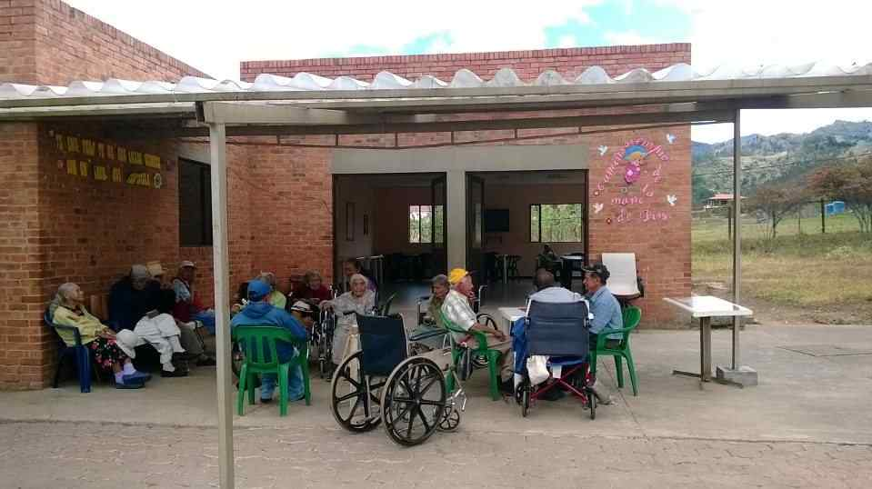
Some time ago, I used to go there to draw pictures
with the elders and read stories to them. At that time, it
was hard for me to find my place in this institution, which
is administered by two Catholic nuns and counts with
some workers and benefactors, but not with volunteers.
Somehow, I was starting a pioneering role in the Center.
In the past, when I visited the Center, I was often very
moved by the elders’ loneliness. That is why I think they
deserve compassion. To me, this word means that I feel
others’ pain and I try to make sense of this feeling.
In this last visit, I had two purposes. Firstly, I wanted
to go back to spend time with the elders in playful
activities, and secondly I wanted to meet the Sisters and
make a good impression to them so I could take up the
goal of becoming friends with the elders, register and
recover their life stories.
It is important to keep in mind that neither the Sisters
nor the caregivers and the elders, or even I, share the
same vision of reality. Our contexts, our stories, our
expectations and purposes are very different and,
naturally, this affects our perceptions.
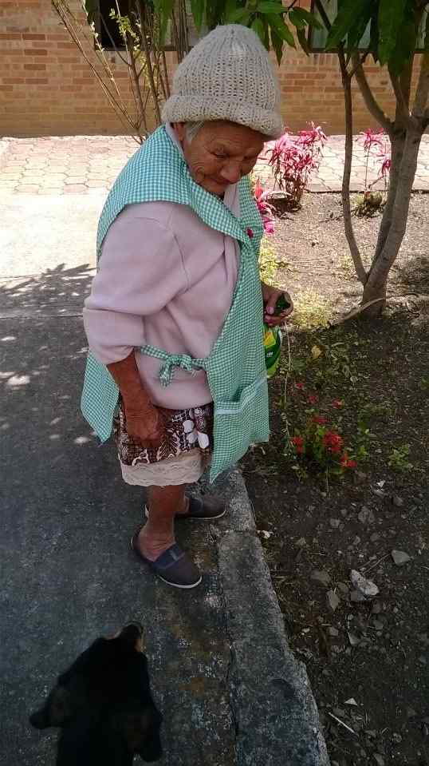
Colombia´s multiculturalism
and diversity is present here.
As for myself, I come from an
academic environment, since I
was a university Professor for
many years, and I live in
Bogotá much of my time. The
Sisters, in contrast, come from
Antioquia, a Colombian
province with its own, very
particular, cultural background.
They have a religious-oriented
fieldwork training. And, finally,
the elders come mostly from
rural Pacho and almost all of
them have very little education.
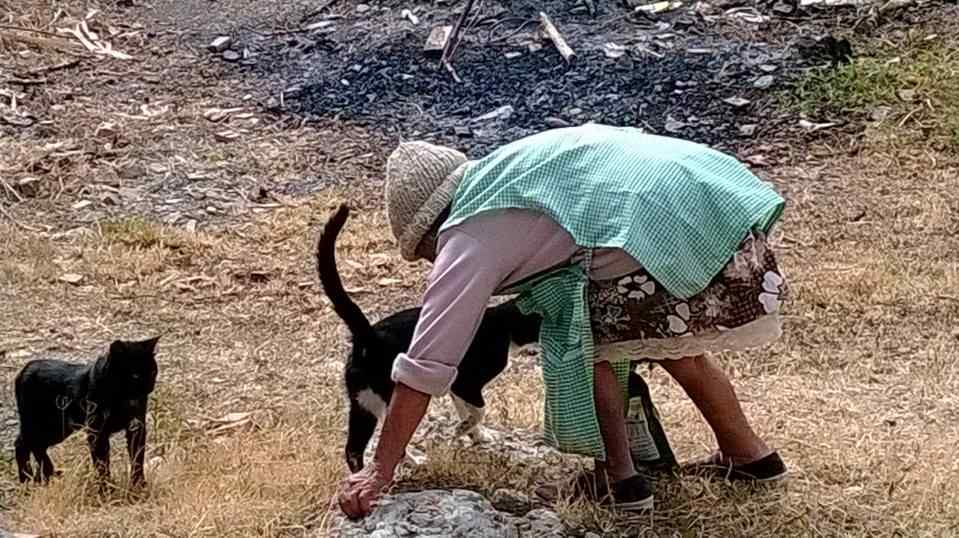
As expected, the communication was not easy. It
was necessary to confront prejudice and preventions.
While the material needs of the elderly are well
provided, I think human beings need more than just
food and shelter. In particular, everyone needs to
relate to others, to communicate, to build shared
experiences.
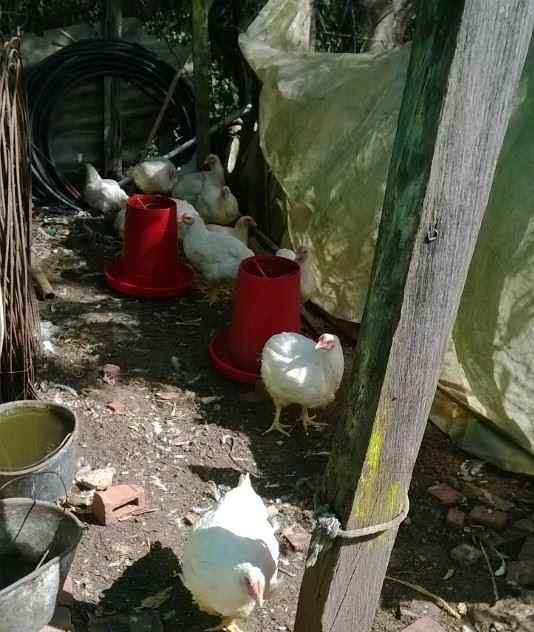
Unfortunately, the communication among the elders,
and between them and their caregivers, is very poor.
This is in part because their language is poor and they
have hearing problems, but mostly because of the
prevalence of distrust and fear which can be traced back
to a history of abuse and neglect.
A few elders do chores such
as gardening or cooking. Some
like to play ludo. But most of
them just sit and let pass the
time …
Sister Marta arrived to the
Center three months ago along
with another nun to take over
the management of the house.
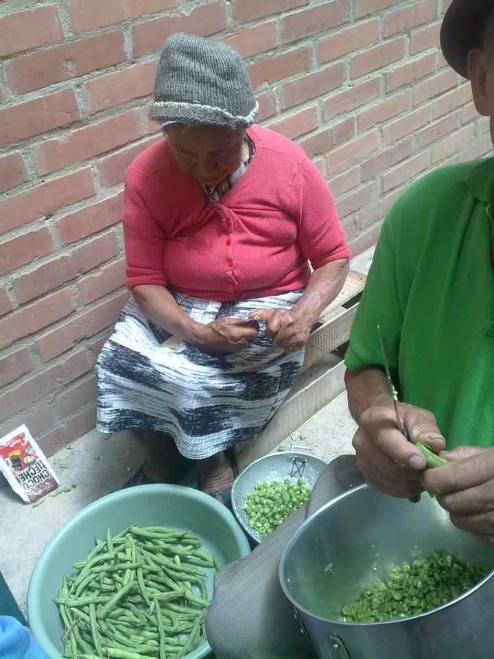
I had not met her before,
so I explained the best I
could the purpose of my
visit. I suggested that I
could talk to the elderly
and create a file with their
life stories, but she said
she did not agree with the
latter. I think she feared
that I wanted to criticize
her work.
I am aware that some
elderly have the habit of
complaining and making
Helping in the kitchen
up stories. I also know
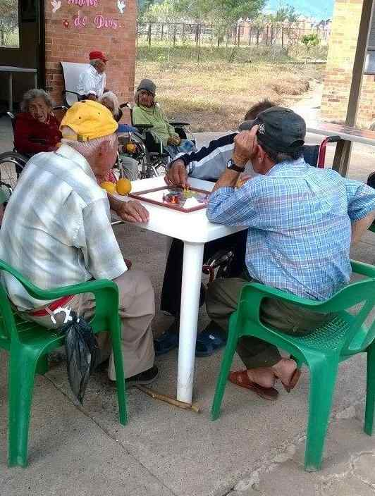
that what they say should not be taken literally. But they
are, by no means, absolutely unintelligible. Underlying
w
hat they say, they express
the truth of their lives, and
through their stories, it is
possible for an understanding
and empathetic ear, to take a
glimpse of their past
experiences, desires, and
hopes.
How to persuade the
Sister? Taking the direct route
of persuasion would have
been difficult. I decided better
the peripheral route. I tried to
make her feel that I was
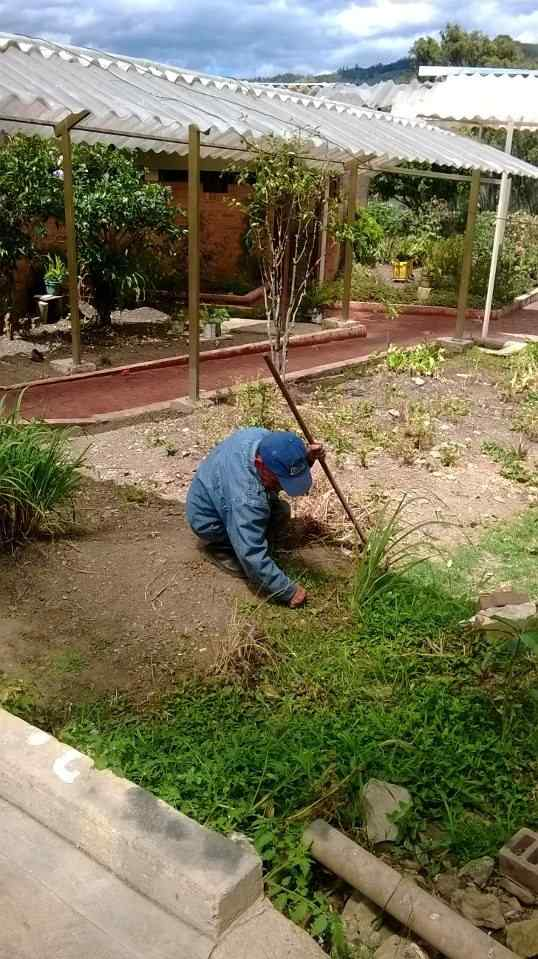
useful and that we shared a
common purpose. So I took
part of the rosary, and when
she told me that a patient
needed a drug, I offered myself
to go get it. So, I went and I
also bought corn for the
chickens and food for the cats.
The elderly are very happy
when they got the food to feed
their animals.
When I went back I joined
the rosary. Most of the elders
like to pray but others remain
apart and they even try to sabotage the activity.
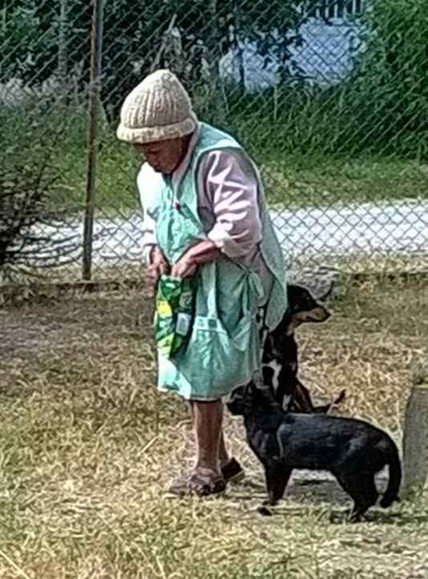
I wonder if this passivity of
most of the elderly is related to
the phenomenon of de-
individuation. The elders
exercise their role, caregivers
and directors alike, but no one
really questions who he/she is,
or why he/she does what
he/she does.
After the rosary, I read them
some poems and short verses.
From this experience I was
motivated to continue visiting
the elderly, supporting
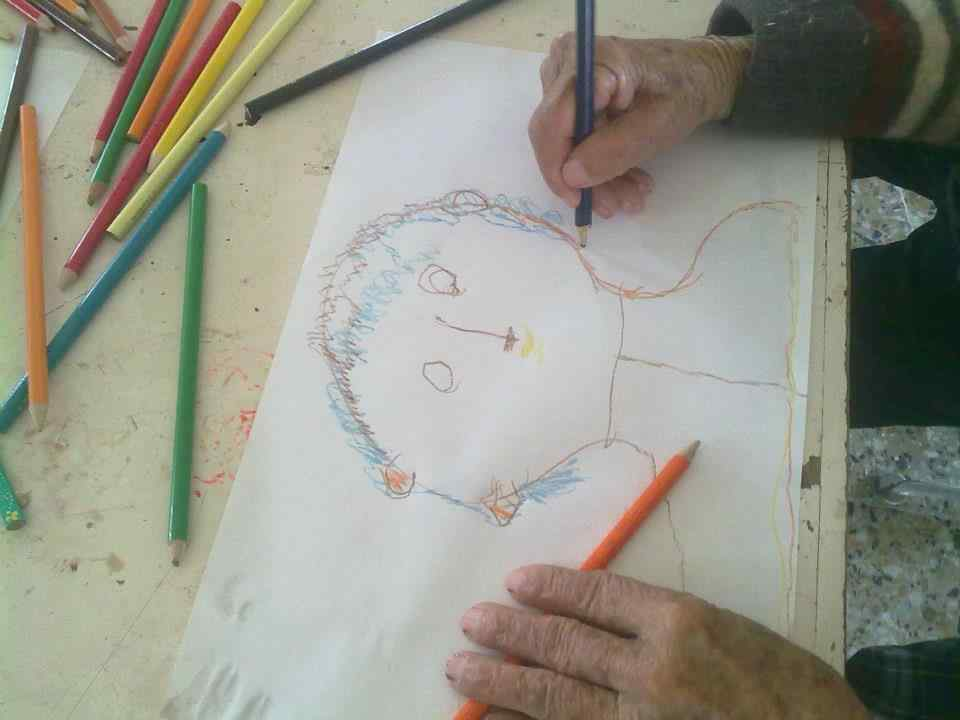
the work of the Sisters and other caregivers and
continuing the work of saving their narratives and life
stories. I think that, no matter what difficulties and
obstacles I may encounter, eventually, I wil be able
to write a text and make photographic records, so
that the lives of these people are nor lost in oblivion,
and new generations will be able to learn to
understand and value their elders.
Drawing
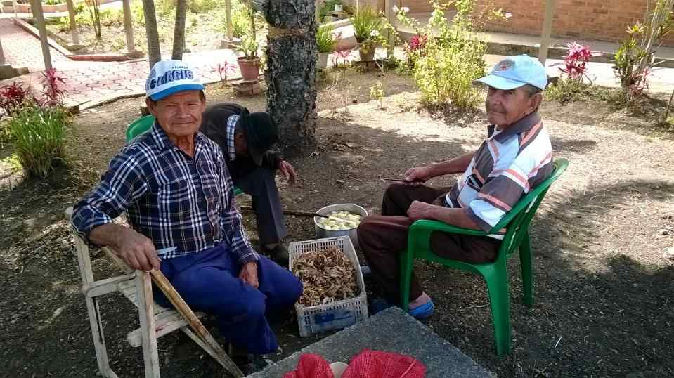
I wil also try to promote library visits and
participation in the town’s cultural projects. These
activities wil surely contribute greatly to improve the
elders’ good self-esteem and a better perception of
themselves as individuals.
Peeling potatoes
Document Outline